Homem, 37 anos, pedreiro, submetido a hernioplastia inguinal direita com colocação de tela. Na descrição cirúrgica do procedimento, a hérnia consta como ""inguinal direita, com alargamento do anel inguinal interno, cujo saco herniário era formado por parte da parede da bexiga e continha parte do grande epiplon e alças de delgado"". Pode-se dizer que se trata de uma hérnia:
Paciente do sexo masculino, 30 anos, etilista e tabagista, dá entrada no pronto-atendimento devido a dor abdominal epigástrica e vômitos com raias de sangue que se iniciaram após uma festa. Durante a investigação diagnóstica, realizou endoscopia digestiva alta, com diagnóstico de síndrome de Mallory Weiss. Considerando o diagnóstico em questão, qual é a região acometida?
Um jovem de 17 anos, acompanhado de sua mãe, procura a emergência cirúrgica com queixa de dor epigástrica há dois dias, que migrou para fossa ilíaca direita. Associado apresenta náuseas e anorexia. Nega febre. Ao exame físico, encontra-se em bom estado geral e afebril. Apresenta dor a palpação de fossa ilíaca direita com defesa a descompressão brusca. Os exames laboratoriais mostram leucocitose de 14.000/mm3, sem desvio a esquerda (polimorfonucleares < 75%). Para definir a probabilidade diagnóstica de apendicite aguda, podemos afirmar que o Escore de Alvarado:
Um jovem chega à emergência com queixa de dor e abaulamento em região inguinal direita há oito horas. O estado geral é bom. Seus sinais vitais são normais. O exame físico abdominal é indolor a palpação e nota-se a presença de uma hérnia inguinal encarcerada a direita. A melhor conduta neste caso é:
Uma mulher de 42 anos procura a emergência cirúrgica com queixa de dor intensa em hipocôndrio direito há quatro dias. Associado, apresenta náuseas, vômitos e sensação febril. Ao exame físico, apresenta dor a palpação de hipocôndrio direito, com interrupção da inspiração. Seus sinais vitais estão normais. O ultrassom de abdômen superior evidencia aumento do diâmetro da parede da vesícula biliar, com líquido peri-vesicular. Possui amilase de 110 U/ L e leucócitos de 19.000/mm3. Segundo o guideline de Tókio de 2018, podemos afirmar que se trata de uma colecistite aguda:
Feminina, 37 anos, com história pregressa de colite de Crohn, em acompanhamento com proctologista e em uso de sulfassalazina, chega à emergência com queixa de febre alta, distensão abdominal e sinais clínicos de sepsis. Os exames laboratoriais mostram leucocitose e provas inflamatórias elevadas. A radiogra a abdominal evidencia distensão de todo cólon, sem sinais de pneumoperitônio. Uma provável hipótese diagnóstica e o tratamento seria:
Uma senhora de 54 anos, atendida em um Hospital Secundário, queixa-se de dor abdominal difusa há quatro dias, associado a episódios de náuseas e vômitos de coloração escura e odor fétido. Informa que já passou por cinco procedimentos cirúrgicos abdominais, sendo o último há dois anos. O exame físico revela uma distensão abdominal difusa, percussão timpânica, mas sem sinais de irritação peritoneal. Realizado radiogra a abdominal com ""níveis hidroaéreos e empilhamento em moeda"" em alças intestinais de delgado e presença de ""ar"" em reto baixo. Não há pneumoperitônio. O médico assistente faz o diagnóstico de suboclusão intestinal e resolve tratar clinicamente nas primeiras 24 horas. Qual conduta abaixo deveria ser evitada para esta senhora?
Um jovem de 20 anos, vítima de acidente de trânsito com colisão frontal, foi arremessado com a região cervical em direção ao volante do carro. Na admissão, apresenta franca insu ciência respiratória, rouquidão, en sema subcutâneo, dor e crepitação em região cervical anterior. Na avaliação inicial deste paciente, após o insucesso na tentativa de intubação orotraqueal, a melhor maneira de manter e garantir uma via aérea pérvia é através de:
Um senhor de 60 anos, sem história de trauma, procura a emergência com queixa de dispneia aos mínimos esforços. Uma radiogra a de tórax evidenciou a presença de derrame pleural moderado a direita. O médico realizou uma toracocentese com a nalidade de examinar o líquido pleural. Enviado para análise: relação Proteína Pleural / Proteína Plasmática é maior que 0,5; e, a relação DHL pleural / DHL plasmático é maior que 0,6. Com base nesta informação, podemos dizer que:
Masculino, com quadro clínico sugestivo de pancreatite aguda é admitido na emergência do hospital. Na admissão, ele apresenta um hematócrito de 36%; hemoglobina de 12 mg/dl; leucócitos de 12.000; glicemia de 145 mg/dl; AST sérica de 140 U/L; amilase de 1200 U/L; ureia de 20 mg/dl e DHL de 250 UI/L. Submetido aos procedimentos de rotina, como hidratação vigorosa, analgesia e transferido para a Unidade Terapia Intensiva. Com relação a utilização da tomografia computadorizada abdominal, podemos afirmar que:
Durante a visita na enfermaria cirúrgica, o médico assistente está diante de um paciente que se encontra no primeiro pós- operatório de uma colectomia parcial por um tumor carcinoide. O paciente encontra-se apático e pouco comunicativo. Com baixa diurese e ruídos hidroaéreos ausentes. Diante destes achados, podemos afirmar que:
Masculino, vítima de ferimento por arma branca em região de transição tóraco-abdominal esquerda há duas horas. Assintomático, seus sinais vitais são: Pressão Arterial de 110/78 mmHg; Frequência Cardíaca de 112 bpm; Frequência Respiratória de 28 ipm. A ausculta pulmonar esquerda é discretamente diminuída em relação a direita. O exame físico abdominal é normal, sem dor ou sinais de peritonite. Foi realizado uma tomogra a computadorizada de tórax e abdômen que evidenciou pneumotórax laminar a esquerda. A melhor conduta neste caso seria:
Um jovem vítima de acidente de moto, com colisão frontal em um anteparo xo, é levado à emergência cirúrgica. Na avaliação inicial, seus parâmetros vitais são: Pressão Arterial de 90/75 mmHg; Frequência Cardíaca de 128 bpm; Frequência Respiratória de 32 ipm. A ausculta respiratória está diminuída em hemitórax esquerdo e a percussão é timpânica. O médico assistente resolve proceder com a drenagem torácica do lado afetado. Durante a drenagem, com a exploração digital, foi identificado a presença de vísceras abdominais na cavidade torácica. A melhor conduta neste momento é:
Paciente feminina, vítima de atropelamento em rodovia. Atendida pela equipe médica pré-hospitalar, chega à emergência com intubação orotraqueal, em ventilação mecânica. A Escala de Coma de Glasgow é de 7 (Ocular - 1; Verbal - 1; Motor - 5). Instável hemodinamicamente e com Ultrassom FAST SCAN positivo em todos os quadrantes abdominais, foi iniciado a reposição volêmica e droga vasoativa em veia periférica. O médico assistente resolve, neste momento, traçar o ROTEM (Tromboelastometria) que evidencia um fechamento abrupto da curva do coágulo ( figura abaixo). A melhor maneira de corrigir este distúrbio seria com:
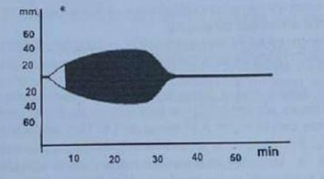
Um jovem, vítima de acidente de moto, chega a emergência com a equipe do pré-hospitalar queixando-se de dor abdominal intensa. Seus sinais vitais são: Pressão Arterial de 80/56 mmHg; Frequência Cardíaca de 138 bpm; Frequência Respiratória de 28 ipm. A radiogra a de tórax e do quadril estão normais. O ultrassom FAST SCAN é positivo nos três quadrantes abdominais. O médico assistente resolve ativar o Protocolo de Transfusão Maciça baseado no ABC score e Shock Index. Neste momento, a melhor conduta seria:
Uma criança chega a emergência, trazida por seu pai, com história de ter apresentado queda de bicicleta. Apresenta um ferimento corto contuso em face anterior do antebraço esquerdo. O médico de plantão informa o pai que irá realizar uma sutura. A melhor sequência para realização da sutura, depois da colocação de gorro, máscara e luva estéril, seria:
Paciente de 61 anos, feminina, admitida em hospital terciário com dor epigástrica tipo aperto, de forte intensidade, iniciada há quatro horas, acompanhada de sudorese, náuseas e irradiada para os membros superiores. Ao exame físico: PA: 150/80 mmHg. Frequência cardíaca: 98 bpm. Precórdio: ritmo cardíaco irregular, bulhas normofonéticas, sem sopros. Pulmonar:murmúrio vesicular simétrico e mantido bilateralmente, sem ruídos adventícios. Foi traçado o seguinte eletrocardiograma. Qual é o melhor tratamento?
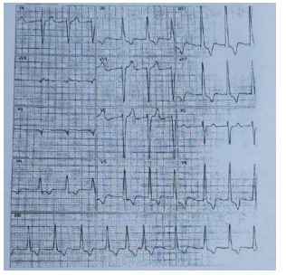
Paciente masculino de 67 anos admitido com hemiplegia a direita proporcionada associada a afasia, com histórico de hipertensão arterial e diabetes. Sua pressão arterial é de 170/90 mmHg e com o seguinte eletrocardiograma. Após a fase aguda do AVC isquêmico, o paciente recebe alta hospitalar. Qual a melhor prescrição ambulatorial para esse paciente, além do controle glicêmico? Imagens anexas:
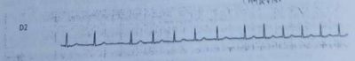
Paciente feminina de 18 anos, apresentando transtorno alimentar e em uso de medicações para emagrecer, é admitida na emergência com queixa de fraqueza e di culdade de deambular há 1 dia. Ao exame físico, seus sinais vitais eram normais, e chamava a atenção a presença de força muscular grau 3 bilateralmente em membros inferiores, com reflexos diminuídos. Em relação ao caso clínico, assinale a alternativa CORRETA:
Durante estágio na nefrologia, você é solicitado para avaliar um paciente de 72 anos de idade com diabetes mellitus tipo 2, internado para a urologia devido choque séptico urinário secundário a hiperplasia prostática benigna. Já na admissão, ele apresentava creatinina sérica de 3,6 mg/dl, sendo que no sistema hospitalar havia um exame prévio com valor de 1,8 mg/dl, com data de 2 meses atrás. Como deve ser classificada essa piora da função renal?
Paciente de 60 anos, feminino, encaminhada ao ambulatório de endocrinologia por diabetes mellitus tipo 2 descompensado. Relata diagnóstico há 15 anos, em uso regular de metformina 1,5g/dia. Queixa-se de poliúria e polidipsia nos últimos 2 meses. Não adere a dieta e está sedentária há 3 anos. Apresenta antecedentes de hipertensão e dislipidemia. Últimos exames realizados não demonstram aparentes sinais de microangiopatia, porém HbA1c=11%. Neste caso, qual é a conduta farmacológica a ser realizada?
Paciente de 55 anos, masculino, procura atendimento ambulatorial por di culdade no manejo de seus níveis pressóricos. Reporta ser hipertenso há 10 anos em uso regular de clortalidona 25mg/dia, enalapril 20mg/dia e anlodipina 10mg/dia. Nega outros fármacos, tabagismo e comorbidades. Recentemente realizou exames de US Doppler de carótidas, teste ergométrico e exames laboratoriais sem alterações. Exame físico sem achados alterados exceto por PA= 155/92 mmHg em membro superior direito. Segundo o paciente, tais valores são semelhantes aos aferidos em domicílio. Neste caso, qual deve ser a abordagem farmacológica a ser instituída?
Diagnóstico e investigação adicional Paciente de 35 anos, feminino, procura atendimento ambulatorial após realizar exames de rotina com resultado de TSH=7,5 mUi/L (VR:0,5 a 4,5). Encontra-se assintomática no momento da consulta. Ao exame físico cervical não há sinais de bócio. Qual a melhor conduta?
Paciente de 54 anos, feminino, é admitida em unidade de emergência por quadro de dispneia iniciada há 2 horas, enquanto realizava hormonioterapia. Não possui outras comorbidades e não é tabagista. Ao exame físico, apresentava-se com frequência respiratória de 28 ipm, frequência cardíaca de 110 bpm e saturação de O₂ 88% em ar ambiente. Ausculta pulmonar sem ruídos adventícios e presença de edema assimétrico em membro inferior esquerdo. Assinale a alternativa correta:
Paciente de 50 anos, masculino, é admitido em enfermaria de clínica médica para investigação de astenia e dispneia aos esforços há 2 meses. Ao exame físico, encontra-se descorado ++/4+, afebril, anictérico, taquicárdico (FC=105bpm) e ausculta precordial com sopro holossistólico audível em praticamente todos os focos. Faz acompanhamento ambulatorial por diabetes, hipertensão e doença do re uxo gastroesofágico, estando em uso de metformina, gliclazida, enalapril e omeprazol. Exames complementares evidenciaram Hb=7,4g/dl, Ht=22%, VCM=110 um³ (80 a 100), HCM=35 (28 a 34), leucócitos=3.500/mm³, plaquetas=152mil/mm³. Assinale a alternativa correta:
Paciente de 65 anos, masculino, diabético, interna com quadro de fraqueza, mialgia e febre de 38,5ºC. Na admissão foi relatada crise tônico-clônica generalizada, escala de coma de Glasgow=14 (abertura ocular ao chamado verbal), pupilas isofotorreagentes, sem dé cits motores, glicemia capilar de 110mg/dL. PA: 150/80 mmHg, frequência cardíaca de 110 bpm. Sem antecedentes de epilepsia. Qual a investigação inicial para a crise convulsiva desse paciente?
Mulher de 52 anos, com dor em região de hemitórax a direita, astenia e hiporexia há 4 semanas. Há 1 semana evoluiu com dispneia e procura do leito. Exame físico: REG, descorada +/4+, desidratada +/4+, anictérica. Ausculta pulmonar: murmúrio vesicular abolido em base de hemitórax a direita, macicez a percussão na mesma região. Foi realizada toracocentese com retirada de 400ml de líquido amarelo citrino. Os seguintes exames foram realizados: Qual a conduta correta? Imagens anexas:
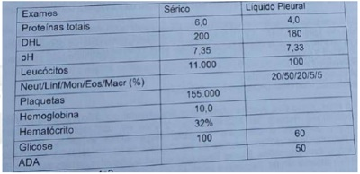
Homem de 70 anos chega ao pronto atendimento com quadro de pneumonia comunitária. Realizou o tratamento inicialmente internado e completou antibioticoterapia em esquema residencial. Volta ao ambulatório da unidade básica de saúde assintomático, 2 meses após o episódio de internação. Ele quer saber qual vacina deve tomar após o episódio de pneumonia. Qual alternativa contém a melhor orientação?
Mulher, 50 anos, hipertensa há 15 anos, há 2 meses com edema de membros inferiores e constipação. Refere cansaço progressivo e ortopneia. Após 3 consultas no pronto atendimento, foi encaminhada para internação hospitalar. Ao exame físico: normocorada, hidratada, frequência respiratória de 24 ipm, frequência cardíaca de 110 bpm, pressão arterial: 160/80 mmHg. Precórdio: ritmo duplo regular, bulhas normofonéticas, sem sopros. Pulmonar: murmúrio vesicular diminuído bilateralmente com creptações até 2/3 médios. Abdome: fígado palpável a 4cm do rebordo costal direito, bordas rombas e dolorosas. Extremidades: presença de cacifo, edema de +++/4+ em membros inferiores. As medicações que devem constar na prescrição inicial de internação:
Homem de 60 anos, diabético, com quadro de fraqueza e astenia há 1 mês. Com dor progressiva de região lombar e braço direito. Na última semana apresentou constipação e confusão mental, evoluindo com sonolência há 2 dias. Foi levado pelos familiares a unidade básica de saúde onde os seguintes exames foram realizados: Hb: 8,1g/dL; Ht: 25%; Leucócitos: 7.800/mm³; Plaquetas: 160.000/mm³; VCM: 85; HCM: 30; Ureia: 88mg/dL; Creatinina: 2,0mg/dL; Albumina: 3,0g/dL; Glicose: 98mg/dL; Sódio: 135mEq/L; Cloro: 110mEq/L; Gasometria: pH/PCO₂/HCO₃; 7,20/35/18. Urina I: pH: 6,0;Densidade: 1030; Proteínas: 2+/4+; Glicose: 1+/4+; Leucócitos: 1/campo; Hemácias: 2/campo; Qual a principal hipótese diagnóstica?
Mulher de 32 anos é encaminhada ao hospital universitário com queixa de dor lombar, calafrios e sonolência. Refere estar em uso de antibióticos há 5 dias, sem melhora do quadro. Ao exame físico apresentava-se confusa, pele fria, hipocorada +/4+, com tempo de enchimento capilar (TEC) de 5 segundos. Pressão arterial (PA): 80/50 mmHg, frequência cardíaca (FC) de 110 bpm, Temperatura: 37,6ºC, peso habitual: 60Kg. Assinale a alternativa correta:
Homem de 42 anos de idade procura pronto atendimento com quadro de dor, edema e hiperemia progressivos no tornozelo direito há 14 dias. Há 3 dias com calafrios, tremores e astenia. Foi internado para investigação complementar, colhidas hemoculturas e iniciado vancomicina. Paciente evolui com melhora clínica, afebril e, após 5 dias, temos o seguinte antibiograma: Assinale a alternativa correta: Imagens anexas:
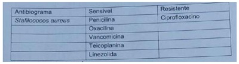
Paciente na 28ª semana de gestação com rotura prematura pré-termo de membranas. Optou-se pelo uso de corticoide para acelerar a maturidade pulmonar fetal. Antes do início dessa terapia, deve ser afastado o diagnóstico de:
Paciente na primeira consulta de pré-natal, sem comorbidades, que não sabe informar a data da última menstruação e que também não fez exame ultrassonográ co até o momento. Ao exame obstétrico, é constatado medida da altura uterina de 26 centímetros. Nesses casos, para diferenciar fetos constitucionalmente pequenos de fetos com restrição intra-útero, deverá ser realizado (a):
Revisar: possível letra faltando em enunciado
O partograma esquematizado mostra a evolução de um parto por via vaginal, no qual ocorreu uma distócia da dilatação (fase ativa prolongada). Uma das causas envolvidas para essa ocorrência é: Imagens anexas:
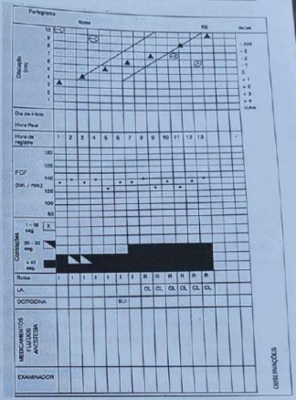
A introdução da imunoglobulina anti-D diminuiu a incidência de Doença Hemolítica Perinatal. Durante a assistência pré-natal, a administração desse medicamento em gestantes Rh negativo poderá ser realizada no seguinte caso:
Primigesta, 38 semanas de gestação, durante o trabalho de parto por via vaginal, na posição de litotomia, após o desprendimento do polo cefálico, constatou-se a ocorrência de distocia de ombros. Assinale a alternativa que contém a conduta imediata a ser realizada:
Durante a evolução de trabalho de parto em primípara, foi constatada a ocorrência de falha de progresso no 1º estágio, constatada aos 7 centímetros de dilatação. Foi realizado amniotomia e, após duas horas não houve progressão da dilatação cervical. Foi oferecido para a parturiente o uso de ocitocina endovenosa. De acordo com as Diretrizes Nacionais de Assistência ao Parto Normal (Ministério da Saúde Do Brasil, 2017), a paciente deverá ser informada:
Durante a condução de um parto por via vaginal, aos 6 centímetros de dilatação, foi realizado exame cardiotocográfico que mostrou a ocorrência de desacelerações periódicas da frequência cardíaca fetal, após as contrações uterinas (DIP II ou tardio). Este quadro é observado nos casos de:
Tercigesta, admitida na maternidade em trabalho de parto. Durante o 3º período clínico do parto apresentou dor súbita e hemorragia intensa que evoluiu para choque hipovolêmico. Ao exame físico, na palpação abdominal, observou-se ""fuga da matriz"". Foram realizados tratamento do choque, manobra da Taxe e procedimento de Huntington. De acordo com esses dados, o quadro clínico dessa paciente é compatível com:
Paciente com 20 anos de idade, referindo ciclos menstruais a cada 28 dias, uxo normal, menarca aos 11 anos, acne facial inflamatória, hirsutismo e índice de massa corpórea de 28 kg/m². Realizou ultrassonogra a pélvica transvaginal que revelou ovário esquerdo com 11 cm³ e presença de 24 folículos antrais dispersos no tecido gonadal. Qual é o diagnóstico?
Casal deseja engravidar. Ela com 23 anos, ciclos regulares, ultrassonografia para análise de ovários, útero, cavidade uterina e permeabilidade tubária sem alterações. Ele com 26 anos, tabagista, com espermograma avaliado pela classificação da OMS (2010) apresentando os seguintes resultados: Volume = 1,5 ml, Concentração/ml = 14.000.000/ml ; Motilidade total = 37%; Motilidade progressiva = 24%; Morfologia = 7% de formas normais. Qual alternativa apresenta análise adequada do fator masculino?
Mulher de 38 anos, tabagista, referindo uxo menstrual volumoso, nega comorbidades e deseja método contraceptivo da rede pública. No exame físico, PA 140/90 mmHg, IMC = 46,0 kg/m². Os exames atuais bioquímicos demonstram dislipidemia moderada, o ultrassom transvaginal mostra miomatose intramural com componente submucoso, o ultrassom de mamas mostra cistos mamários bilaterais, a citologia oncótica está normal. Qual opção mais adequada para contracepção disponível no serviço público (UBS)?
Mulher, 19 anos, G=1, P=0, A=1, coitarca aos 14 anos, usuária de contraceptivo hormonal oral, procurou serviço médico em UBS por conta de corrimento vaginal mucoso de longa data. Realizada a coleta de colpocitologia oncótica, que mostrou suspeita de lesão intra-epitelial cervical de alto grau - (NIC=II/III). Submetida à colposcopia e biopsia de lesão, em área de pontilhado fino, foi diagnosticada como NIC=II. A conduta ideal para esta paciente é:
Paciente internada com quadro de dor e distensão abdominal. Refere que os sintomas começaram há 6 meses, após ter sido submetida à exérese de um cisto roto no ovário direito. Após realização de exames complementares, que não foram elucidativos, a paciente é submetida a uma laparotomia exploradora com achado de pseudomixoma peritoneal e apêndice cecal normal. Podemos afirmar que, provavelmente, a paciente teve há 6 meses um:
Paciente de 32 anos procura ambulatório especializado referindo di culdade para engravidar. Ao exame ginecológico nada foi constatado de anormal. Foi solicitado um ultrassom pélvico e transvaginal que revelou conteúdo sólido de 1,5 cm na cavidade uterina, sugestivo de pólipo ou mioma submucoso. A próxima conduta é:
Mulher de 36 anos de idade, G=3 P=3 (C) A=0, submetida à laqueadura tubária após a última cesárea, há 3 anos, dá entrada na emergência com sangramento uterino excessivo há 2 dias. O exame especular revela grande quantidade de sangue saindo pelo orifício cervical. Ao toque, útero de tamanho normal. Qual alternativa abaixo é a melhor opção para esta paciente?
Mulher, 52 anos de idade, G=4 P=3 (N) A=1, histerectomizada há 8 anos por miomatose uterina. Refere fogachos, insônia, irritabilidade, palpitações, fadiga, indisposição e diminuição da libido há 1 ano. A hipótese diagnóstica foi de climatério e menopausa. Os exames de rotina estão todos normais, ela não apresenta comorbidades ou antecedentes pessoais e familiares de neoplasias. Você opta pelo tratamento clínico. Qual a opção para esta paciente?
Gestante com VDRL positivo não fez tratamento adequado durante a gestação. Foi iniciado tratamento no recém-nascido, porém mãe descontinuou o seguimento, assim como o tratamento. Sobre a falha no tratamento da sí lis no seguimento da criança, assinale a alternativa correta.
Mãe relata que lactente de 3 meses apresenta choro inconsolável e irritabilidade, associado a movimento das pernas. A mãe pergunta se pode ser cólica do bebê. Quanto à definição de cólica no lactente, segundo os critérios de Wessel, assinale a alternativa correta.
Lactente de 6 meses, previamente hígido, internado com quadro de diarreia e vômitos, fezes sem sangue ou muco, afebril durante a internação. Ao exame físico está afebril, FC: 180 bpm FR: 40 irpm, olhos fundos e presença de irritabilidade. O restante do exame físico se encontra sem anormalidades. Com base neste quadro, a alternativa correta é:
Criança de 7 anos apresentou trauma em perna direita durante uma partida de futebol. No dia do trauma, não teve dor ou limitação dos movimentos. Após 5 dias apresentou queda do estado geral, febre, dor de forte intensidade no terço médio da perna direita e di culdade para caminhar. Qual a hipótese diagnóstica mais provável e o tratamento mais adequado para este caso:
Criança de 3 anos é atendida na emergência pediátrica com mãe referindo infecção urinária de repetição e urgência miccional desde o início do desfralde. A mãe informa também que criança apresenta fezes em cíbalos com dor ao evacuar e faz manobras de retenção fecal. O exame de urina tipo I é normal e a cultura de urina recente foi negativa. No tratamento inicial desta paciente o medicamento que deve ser usado como primeira escolha é:
Menina de 2 anos de idade, previamente hígida, apresentou 3 dias de diarreia sanguinolenta, que foi resolvida espontaneamente. Após a resolução do quadro diarreico, a mãe notou que a criança começou a apresentar palidez importante. Procurou a emergência do hospital e, ao exame físico, a criança apresentava-se pálida, irritada, afebril, com frequência cardíaca de 150 bpm, pressão arterial de 150/80 mmHg, com edema nas extremidades inferiores com formação de cacifo e petéquias disseminadas. O diagnóstico mais provável para este caso é:
Durante o banho, uma mãe percebeu uma massa no abdome do lho de 4 anos e leva-o ao consultório médico para avaliação. Ele não possui história de vômitos, de fezes anormais ou de dor abdominal. O exame físico revela pressão arterial em repouso de 130/88 mmHg, frequência cardíaca de 82 bpm, palidez e uma rme massa abdominal lateral esquerda, que não cruza a linha média. Qual das seguintes opções é a explicação mais provável para esses achados?
Recém-nascido de 2.200g nasceu com 35 semanas de gestação. Sua mãe realizou pré-natal e a rmou não ter tido problemas. O líquido amniótico tinha uma aparência acastanhada. Ao nascimento, o recém-nascido apresentou exantema pústulo-eritematoso difuso, palidez, recusa da alimentação, taquipneia e cianose. O hemograma completo indicou monocitose acentuada. Ele foi a óbito 4h após o nascimento, em seguida ao início dos antibióticos. Qual a provável hipótese diagnóstica?
Recém-nascido a termo por parto vaginal de gravidez sem complicações. Apresenta aparência normal, mas com desconforto respiratório quando para de chorar. Quando chora, ca rosada; quando não chora, o trabalho respiratório é intenso e começa a ficar cianótico. Qual das alternativas a seguir é a explicação mais provável para esse sintoma?
Menina de 2 meses de idade apresenta sibilância e diarreia há 5 dias. Os pais apresentam um relato subjetivo de febre. Ela continua se alimentando bem. As anormalidades laboratoriais que poderiam sugerir brose cística incluem todas as alternativas, exceto:
Menino de 4 meses de idade, com desenvolvimento pondero-estatural normal, é levado à emergência pediátrica pelos pais, por apresentar piora do desconforto respiratório e diminuição da alimentação. Referem que ele estava bem até ontem, quando iniciou sintomas respiratórios e uma febre baixa. No exame físico, veri cou-se palidez e cianose perioral, frequência respiratória de 65mrpm, e sibilos por todo o tórax. A gasometria arterial mostrou pH de 7.15, pCO2 de 65mmHg e bicarbonato de 20 mmoI/L. Qual das explicações a seguir melhor corresponde à condição apresentada pela criança?
Recém-nascido a termo com peso 3,5 kg, mãe com HBsAg+, nega uso de imunobiológicos durante a gestação, não sabia do diagnóstico até a data do parto e não sabe seu histórico vacinal, qual a conduta em relação ao recém-nascido?
Criança de 5 anos é levada pelos pais ao consultório, segundo o que relatam, a escola tem se queixado da criança por não acompanhar os colegas no rendimento geral e por não conversar com os amigos e professores. Conforme o médico fazia mais perguntas sobre a criança, os pais explicam que ele sempre foi ""difícil de lidar"", que se irrita muito quando tocam nele, que faz ""escândalos"" quando tentam arrumar o cabelo dele. Mas que adora brincar com dinossauros, inclusive suas primeiras palavras se relacionavam a esses animais, sabendo mais de 30 nomes diferentes. Durante a consulta toda, a criança quase não respondeu às indagações da pediatra e não tirava o olho de uma figura colada na balança. O quadro descrito tem como provável diagnóstico:
Criança com 4 anos de idade é levada ao pronto atendimento pela mãe, que a tem achado sonolenta há algumas horas e relata que sua lha tem apresentado diarreia há 3 dias, próximo a 6 evacuações diárias, tendo a evacuação característica explosiva. Ela comenta também que observa inapetência e vômitos desde o início do quadro. Refere febre não aferida. Ao ser examinada pelo pediatra, é notado que a criança apresenta importante assadura em região perineal, aumento do peristaltismo e bastante atulência. Fezes amareladas na fralda, sem muco ou sangue. Assinale a alternativa que revela o mecanismo fisiopatológico da principal hipótese diagnóstica deste paciente:
Pré-adolescente, sexo feminino é encaminhada para hospital terciário devido diagnóstico de cetoacidose diabética. Na admissão, é identi cada glicemia 600 mg/dl; pH 7,1; potássio 4,0 mEq/l. Ao prescrever as medidas iniciais de tratamento, deve ser considerado que:
Escolar apresenta quadro caracterizado pela presença de diarreia crônica, acompanhada de distensão abdominal, perda de peso, diminuição do tecido celular subcutâneo, atro a da musculatura glútea, falta de apetite, alteração de humor (irritabilidade ou apatia), vômitos e anemia. Considerando a hipótese diagnóstica do paciente acima, assinale a alternativa que contém apenas alimentos seguros para esta criança.
Após passarem por ensaios clínicos rigorosos, vacinas contra COVID-19 foram aprovadas para uso emergencial e milhões de doses foram aplicadas na população brasileira. Foi necessário estabelecer estratégias e diretrizes para avaliar a segurança do imunizante a partir da análise de eventos adversos pós-vacinação (EAPV), que são agravos de noti cação compulsória e de investigação epidemiológica imediata a ocorrência do evento. Para as vacinas contra o vírus SARS-CoV- 2, considera-se caso de evento adverso pós-vacinação:
Paciente masculino, 8 anos, foi mordido pelo cachorro da vizinha, enquanto brincava no quintal da casa dela. A vizinha refere que o animal está bem de saúde, que não sai de casa, porém não foi vacinado na última campanha de vacinação contra raiva. No atendimento na Unidade de Pronto Atendimento (UPA), observou-se que o cachorro provocou ferimento leve no membro inferior direito, com mordedura superficial e pouco extensa. Qual a conduta?
Vigilância Epidemiológica Criança de 2 anos de idade, feminina, apresenta febre de 38,5ºC há 1 dia, tosse, coriza, conjuntivite, com exantema que surgiu atrás das orelhas, no rosto e se espalhou pelo corpo. Foi a Unidade de Pronto Atendimento (UPA) onde foi feita a suspeita de sarampo. Frequentou a Creche Municipal até o dia anterior ao início dos sintomas. Esta creche atende crianças de 6 meses a 5 anos de idade. Qual a medida de controle recomendada para interromper a cadeia de transmissão do sarampo na Creche e no domicílio desta criança?
O gráfico abaixo mostra a tendência de casos noti cados de AIDS, óbitos e número de pessoas vivendo com AIDS no estado de São Paulo no período de 1992 a 2019. A mortalidade pela infecção do HIV aumentou rapidamente de 1992 a 1995, diminuindo a partir de 1995 até 2003, com tendência a estabilização até 2015 e posteriormente volta apresentar queda. Esta queda nos óbitos em grande parte pela introdução das novas e altamente ativas terapias antirretrovirais, bem como mudanças no estilo de vida resultantes de educação em saúde pública. Com a queda da mortalidade e o aumento na expectativa de vida de muitas pessoas com vivendo com aids observa-se: Imagens anexas:
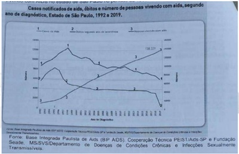
Os últimos casos de Poliomielite no Brasil ocorreram em 1989. Em 1994, o Brasil, juntamente com os demais países das Américas, recebeu da Organização Panamericana de Saúde (OPAS), a Certi cação de área livre de circulação do Poliovírus Selvagem do seu território. No cenário global da poliomielite, dados da Organização Mundial de Saúde (OMS,2021)demostram quase 2 países (Afeganistão e Paquistão) permanecem endêmicos com circulação do polivírus selvagem.(Nota Informativa n°204/2019-SVS/ministério da Saúde, 2121). Para manter esta condição, de área livre de circulação de poliovírus selvagem no Brasil, as medidas recomendadas pela Secretaria da Vigilância de Saúde do Ministério da Saúde são:
Nas diretrizes políticas consolidadas pela Constituição Federal do Brasil (1988), estão os fundamentos da organização do Sistema Único de Saúde - SUS (Lei 8080/1990), de caráter público, formado por uma rede de serviços regionalizada, hierarquizada e descentralizada, com direção única em casa esfera de governo, e sob controle dos seus usuários pela participação social ( Lei 8.142/1990). Esta participação dos usuários se dá a partir da criação de um Órgão Colegiado de Saúde e das Conferências de Saúde, nas três esferas do governo, possibilitando a participação dos usuários na formação políticas públicas, na scalização e controle das ações do Estado em defesa do direito à saúde. Qual é a denominação e qual é a composição paritária do Órgão Colegiado da Saúde que assegura a participação dos usuários no controle do SUS?
Paciente feminina, 83 anos, acamada com sequela de Acidente Vascular Cerebral há 2 anos, reside próximo de uma Unidade Básica de Saúde da Família (UBSF). Na visita domiciliar de rotina do Agente Comunitário de Saúde (ACS), a lha relata que a mãe vem apresentando febre há 1 dia, falta de apetite e diminuição da urina. Na reunião da Equipe na UBSF, no nal da manhã do mesmo dia, o ACS relata o caso e uma visita domiciliar foi agendada com o médico e a enfermeira da equipe para o período da tarde. Que princípio doutrinário do SUS está sendo garantido no atendimento domiciliar da paciente?
Paciente masculino, operador de sistema de reversão do setor de coqueria da Siderurgia Aços AS há 10 anos. No exercício de suas funções opera o sistema de válvulas de gás e de ar nos fornos da coqueria, abastece e descarrega os fornos, manejando um carro de enfornamento e de desenfornamento. Nesta atividade, segundo o Programa de Prevenção de Riscos Ambientais(PPRA) da empresa há exposição ao benzeno, ao xileno, ao lolueno e ao ruido acima de 85 dB. Como médico do trabalho da empresa, quais exames complementares você solicitaria no exame periódico deste trabalhador, de acordo com o Quadro I da NR 7 - programa de controle médico de saúde ocupacional?
Enquanto trabalhava no consultório da Unidade de Saúde da Família de Araçuaí do Norte, uma médica recebeu, de um o cial de justiça, uma noti cação do juiz da comarca para que ela constatasse um óbito e preenchesse a Declaração de Óbito, cuja causa, segundo informa o documento, é ""suspeita de suicídio por arma de fogo"" (causa externa). Diante deste fato, como deve proceder a médica?
Um novo teste rápido para COVID-19 está sendo testado em comparação com o RT-PCR. Em uma amostra de 400 pessoas, o RT-PCR deu positivo em 200 e negativo em 200. Naquelas pessoas em que o RT-PCR deu positivo, o novo teste deu negativo em 50, e naqueles que o RT-PCR deu negativo, o novo Teste Rápido deu 150 positivos. Considerando que o RT-PCR, no momento, é o ""Padrão Ouro"" (a melhor escolha), qual a razão de verossimilhança positiva do novo teste?
Lista Nacional de Notif icação Compulsória de doenças agravos e eventos de saúde pública Paciente de 44 anos comparece no ambulatório de doenças infecto contagiosas com quadro de febre de 39ºC há dois dias, associada a poliartralgia, cefaleia e rash cutâneo. Foi solicitado hemograma, que demonstrou leucopenia, linfopenia, hematócrito normal e plaquetas normais. O PCR apresentou-se elevado. Refere que sua casa se encontra infestada pelo Aedes aegypti e que alguns vizinhos relataram o mesmo quadro. Como dado epidemiológico é importante citar que na sua cidade existem casos autóctones de doenças, cujo vetor é o Aedes aegypti. Foi solicitado Prova de Isolamento Viral e RT- PCR. Qual a hipótese diagnóstica para o caso e a conduta do ponto de vista da Vigilância Epidemiológica?
Após analisar os dados de internações por SRAG, o Ministério da Saúde concluiu que ""pessoas com 80 anos ou mais que se internaram na rede pública da capital paulista com COVID-19 grave tiveram menos chance de sobreviver do que aquelas que buscaram atendimento privado"". Os dados estão apresentados na tabela abaixo: TABELA: Número de internações, óbitos e Coe ciente de Mortalidade por SRAG no município de São Paulo, 2021. Em relação às conclusões do estudo, técnicos da saúde e pesquisadores zeram os seguintes comentários: Pesquisador em saúde pública da Fiocruz e coordenador do projeto Infogripe, que monitora os índices nacionais de covid 19, Marcelo Gomes lembra ""que condições prévias desfavoráveis de pessoas em situação de vulnerabilidade socioeconômica ajudam um pouco a explicar a diferença dos números nas redes público e privada. Mesmo se atendidos em rede privada, é possível que muitos desses casos tivessem o mesmo desfecho. Não se trata apenas de um debate sobre a capacidade do SUS de oferecer atendimento adequado"". Técnicos da Secretaria Municipal de Saúde informaram que ""não considera correto comparar serviços com per s assistenciais diferentes, que consequentemente receberam pacientes com per s distintos. Na fase pré- pandemia, os hospitais sob gestão estadual já respondiam por mais de 65% dos leitos clínicos e de UTI entre os serviços do plano de contingência de enfrentamento da COVID-19 de São Paulo, absorvendo os casos mais graves da doença desde o início da pandemia. A partir dos dados da tabela e dos comentários dos técnicos e pesquisadores, responda: Qual o Risco Relativo de Morte por SRAG entre a Rede Pública e a Rede Privada e quais os fatores podem estar interferindo na validade do estudo do Ministério da Saúde? Imagens anexas:
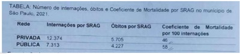
Revisar: possível letra faltando em enunciado
Em relação ao protocolo de mamogra a, o INCA/MS traz as seguintes diretrizes: ""A mamogra a de rastreamento - exame de rotina em mulheres sem sinais e sintomas de câncer de mama - é recomendada na faixa etária de 50 a 69 anos, a cada dois anos. Fora dessa faixa etária e dessa periodicidade, os riscos aumentam e existe maior incerteza sobre benefícios. O Ministério da Saúde recomenda contra o rastreamento com mamogra a em mulheres com menos de 50 anos (recomendação contrária forte: os possíveis danos claramente superam os possíveis benefícios). Embasado nestas diretrizes, responda a seguinte questão: Quando se faz rastreamento com mamogra a em massa, indiscriminado para câncer de mama, e quando não se faz o rastreamento recomendado, com mamogra a bianual em mulheres de 50 a 69 anos, que níveis de prevenção não estão sendo levados em conta pelos serviços de atendimento à saúde da mulher?
Leia as reportagens abaixo: ""A Hospital Care, holding de administração de serviços de saúde, o Grupo Austa e o Instituto de Moléstias Cardiovasculares (IMC) de Rio Preto estão se fundindo em um grande grupo da área de saúde. As empresas não informaram detalhes como valor da operação ou sobre contratações."" (Diário da Região). ""Hapvida compra Grupo HB Saúde por R$ 450 milhões e Cetro por R$ 25 milhões: A Hapvida anunciou nesta quarta-feira as aquisições do Grupo HB Saúde, em São Paulo, por R$ 450 milhões, e do Centro Especializado em Traumatologia Reabilitação e Ortopedia (Cetro), na Bahia, por R$ 25 milhões"" (VALOR investe). O setor da Saúde Suplementar, que possui 48 milhões de consumidores e fatura, aproximadamente, 210 bilhões de reais, em que pese a crise econômica brasileira, está em franco aquecimento e movimentação. Este movimento tem impactado consideravelmente na pro ssão e no mercado de trabalho médico. Baseado nas duas reportagens acima, responda: Quais as tendências do mercado da saúde suplementar apontadas pelas reportagens e que impactos estão sendo observados no trabalho médico?
Paciente masculino, 61 anos, foi atendido pelo médico da UBSF do seu bairro, relatando ter notado ""estrias de sangue nas fezes"" há três dias. Refere que houve mudança no seu hábito intestinal, com diarreias alternando com obstipação intestinal e que vem perdendo peso há três meses. Perguntado sobre doenças na família, referiu que o pai faleceu de ""câncer no intestino"". O médico solicitou hemograma, pesquisa de sangue oculto nas fezes, colonoscopia e o encaminhou para marcar os exames. Após quatro meses, o paciente retorna à Unidade de Saúde referindo que o sangramento anal aumentou, que sente muita fraqueza, perda de apetite e que teve um emagrecimento acentuado. O mesmo médico o atendeu e a conversa entre os dois foi assim: DOUTOR: - Bom dia. O Sr. realizou os exames que eu te pedi? PACIENTE: - Bom dia, doutor! Eu não fiz ainda. DOUTOR: - Como não fez? Assim não dá! Como vou saber o que o senhor tem? PACIENTE: - Desculpa, doutor! A culpa não foi minha. Marcaram os exames para daqui a seis meses, e eu só piorando. DOUTOR: - Infelizmente, sem os resultados dos exames não posso fazer nada. PACIENTE: - Paciência, né doutor, paciência. Vamos aguardar. Quem sabe Deus dá um jeitinho. Muito obrigado! Assim que conseguir os exames eu volto. Ao ler esta história ctícia, mas que acontece todos os dias em grande parte dos serviços de saúde do Brasil, qual a diretriz da Política Nacional de Atenção Básica que não foi levada em conta pelo médico e pela equipe de saúde da UBSF?
Paciente masculino, 65 anos, alcoólatra há mais de 30 anos. Segundo a acompanhante, toma em média três copos de pinga e cerveja quase que diariamente. Foi internado no hospital psiquiátrico quatro vezes, apresentando síndrome de abstinência. Em acompanhamento no ambulatório de hepatologia há oito anos, com diagnóstico de Cirrose Hepática e Diabetes. Deu entrada no hospital apresentando confusão mental, ictérico +++/4+, eritema palmar e telangiectasia, distensão abdominal por ascite, hepatoesplenomegalia e ginecomastia. Ao terceiro dia de internação, apresentou episódios de hematêmese, choque hipovolêmico, parada cardiorrespiratória, vindo a falecer. Como deve ser preenchido a Declaração de Óbito? Respostas: 1 12 23 34 45 56 67 78
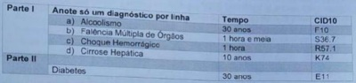
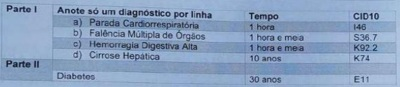
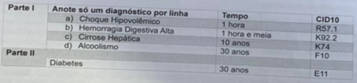
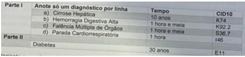